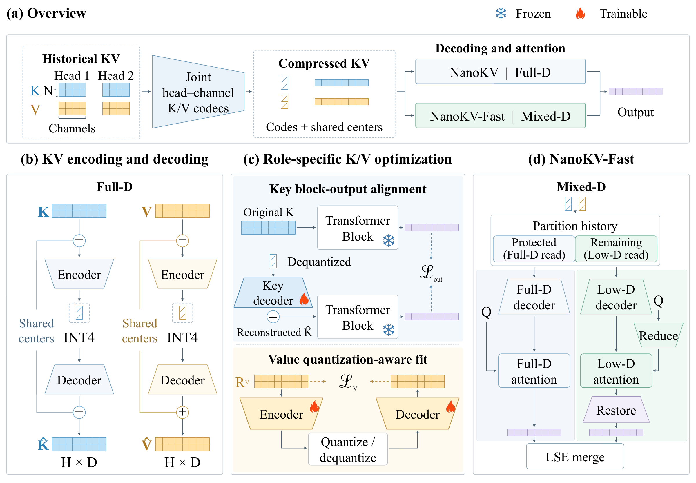

A compact representation
Shared centers capture common content. Joint head–channel residuals become low-bit coefficients.
GENERATION-AWARE KV COMPRESSION
Generation-aware compression preserves the downstream effect of historical KV, with an optional Fast mode for mixed-dimensional attention.
1 Zhejiang University 2 NVIDIA
* Corresponding author
Effective KV compression
HY-WorldPlay · NanoKV
Lower peak GPU memory
HY-WorldPlay · teaser configuration
End-to-end latency overhead
NanoKV vs. Original · all three backbones
01 / VISUAL RESULTS
Original and compressed generations, side by side.
02 / THE METHOD
High-ratio compression is more than reconstructing KV features. NanoKV preserves the downstream effect of compressed history on generation.
Shared centers capture common content. Joint head–channel residuals become low-bit coefficients.
Keys: align downstream block outputs.
Values: fit reconstruction through the deployed quantization path.
NanoKV decodes full-dimensional KV. Optional Fast readers construct mixed-dimensional features from the same coefficients.

View full resolution ↗Autoregressive video models rely on historical key–value (KV) caches to preserve scene consistency over extended rollouts, making KV storage and repeated attention over history a growing memory and computational bottleneck. Aggressive compression can degrade generation quality, while reconstructing full-dimensional KV leaves attention computation largely unchanged. We introduce NanoKV, a frozen-backbone framework for generation-aware high-ratio KV compression. NanoKV exploits redundancy across tokens and attention heads by storing shared content in cluster centers and encoding joint head–channel residuals into low-bit coefficients. Crucially, NanoKV uses different fitting objectives for Keys and Values according to their distinct roles in attention: Key decoders are optimized to preserve downstream block outputs, whereas Value encoders and decoders are fitted for faithful reconstruction through the deployed quantization path. Building on the same compressed representation, the optional NanoKV-Fast variant reuses the stored coefficients for mixed-dimensional attention, reducing computation without modifying the video backbone. Across three autoregressive video backbones, NanoKV consistently improves the quality–storage trade-off. On HY-WorldPlay, NanoKV achieves 26.09× effective KV compression—nearly twice that of KVTC—while improving PSNR by 1.0 dB. NanoKV-Fast retains 20.53× effective compression and achieves an approximately 1.15× end-to-end speedup over KVTC.
03 / MEASURED RESULTS
400 videos per configuration. Matched inputs and generation settings within each backbone. Nominal 32× coefficient compression.
Effective compression includes method-specific storage overhead.
| Method | PSNR ↑dB | KV compression ↑effective | E2E speedup ↑vs. Original |
|---|
37.93% less historical-attention computation
NanoKV-Fast computes mixed-dimensional attention from the same compressed KV representation.
PSNR relative to Original · Runtime measured on a single NVIDIA A100.
04 / REPRODUCE & BUILD
Data collection, codec fitting, optional Fast reader fitting, and inference—all with a frozen generator.
Environment setup ↗Codec and reader checkpoints are being prepared for Hugging Face.
@misc{lu2026nanokv,
title={NanoKV: High-Ratio KV Cache Compression for Autoregressive Video Generation},
author={Jiacheng Lu and Haoyi Zhu and Sipei Yi and Enze Xie and Cheng Zhuo and Yu Li},
year={2026},
url={https://github.com/jiacheng-lu03/NanoKV}
}